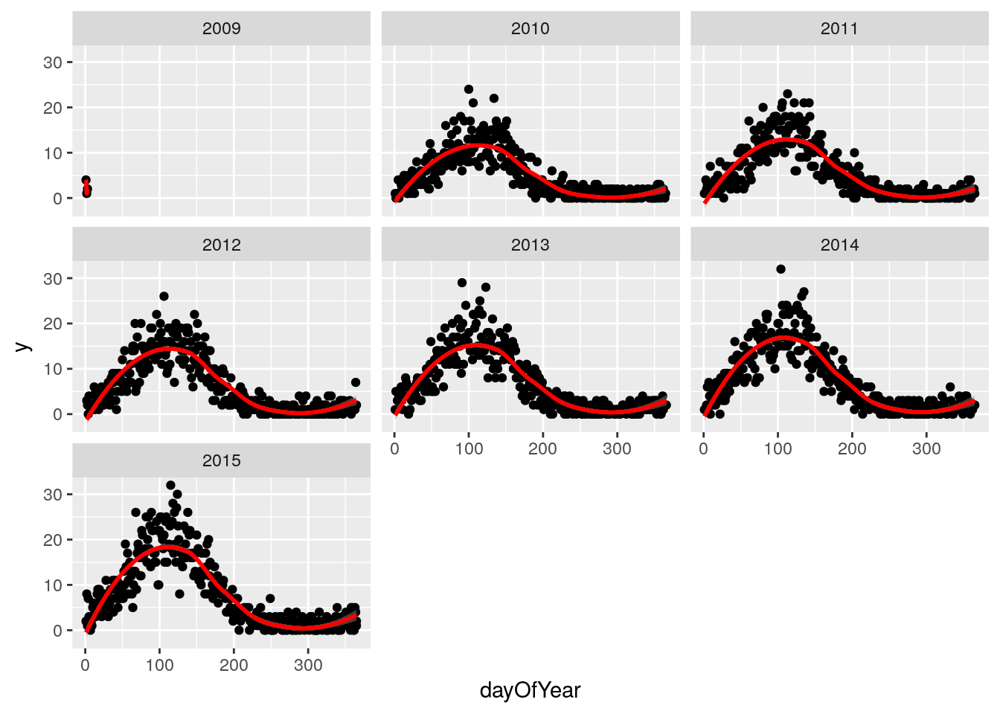
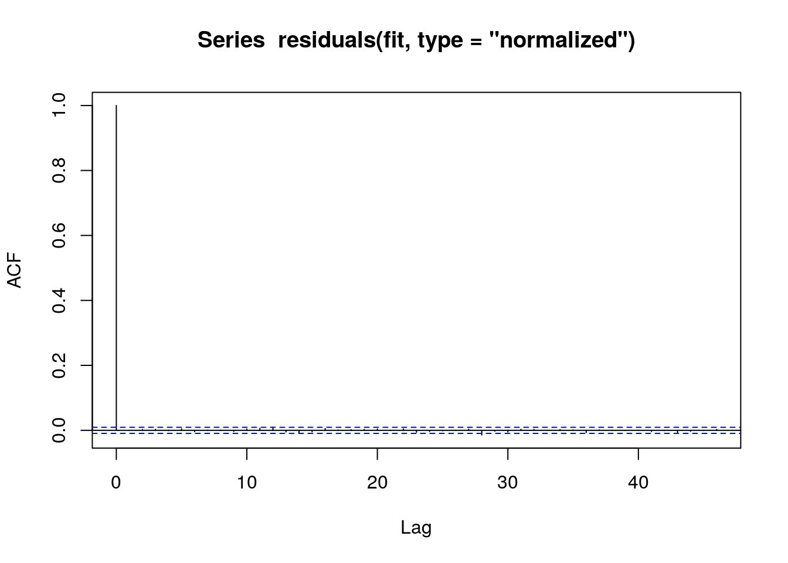

Chapter 6 Variables
library(data.table)
library(ggplot2)
set.seed(4)
AMPLITUDE <- 1.5
SEASONAL_HORIZONTAL_SHIFT <- 20
fylkeIntercepts <- data.table(fylke=1:20,fylkeIntercepts=rnorm(20))
d <- data.table(date=seq.Date(
from=as.Date("2010-01-01"),
to=as.Date("2015-12-31"),
by=1))
d[,year:=as.numeric(format.Date(date,"%G"))]
d[,week:=as.numeric(format.Date(date,"%V"))]
d[,month:=as.numeric(format.Date(date,"%m"))]
temp <- vector("list",length=20)
for(i in 1:20){
temp[[i]] <- copy(d)
temp[[i]][,fylke:=i]
}
d <- rbindlist(temp)
d[,yearMinus2000:=year-2000]
d[,dayOfSeries:=1:.N]
d[,dayOfYear:=as.numeric(format.Date(date,"%j"))]
d[,seasonalEffect:=sin(2*pi*(dayOfYear-SEASONAL_HORIZONTAL_SHIFT)/365)]
d[,mu := exp(0.1 + yearMinus2000*0.1 + seasonalEffect*AMPLITUDE)]
d[,y:=rpois(.N,mu)]
#d[,y:=round(as.numeric(arima.sim(model=list("ar"=c(0.5)), rand.gen = rpois, n=nrow(d), lambda=mu)))]We then drill down into a few years, and see a clear seasonal trend
q <- ggplot(d[fylke==1],aes(x=dayOfYear,y=y))
q <- q + facet_wrap(~year)
q <- q + geom_point()
q <- q + stat_smooth(colour="red")
q## `geom_smooth()` using method = 'loess'## Warning in simpleLoess(y, x, w, span, degree = degree, parametric =
## parametric, : span too small. fewer data values than degrees of freedom.## Warning in simpleLoess(y, x, w, span, degree = degree, parametric =
## parametric, : pseudoinverse used at 0.99## Warning in simpleLoess(y, x, w, span, degree = degree, parametric =
## parametric, : neighborhood radius 1.01## Warning in simpleLoess(y, x, w, span, degree = degree, parametric =
## parametric, : reciprocal condition number 0## Warning in simpleLoess(y, x, w, span, degree = degree, parametric =
## parametric, : There are other near singularities as well. 1.0201## Warning in predLoess(object$y, object$x, newx = if
## (is.null(newdata)) object$x else if (is.data.frame(newdata))
## as.matrix(model.frame(delete.response(terms(object)), : span too small.
## fewer data values than degrees of freedom.## Warning in predLoess(object$y, object$x, newx = if
## (is.null(newdata)) object$x else if (is.data.frame(newdata))
## as.matrix(model.frame(delete.response(terms(object)), : pseudoinverse used
## at 0.99## Warning in predLoess(object$y, object$x, newx = if
## (is.null(newdata)) object$x else if (is.data.frame(newdata))
## as.matrix(model.frame(delete.response(terms(object)), : neighborhood radius
## 1.01## Warning in predLoess(object$y, object$x, newx = if
## (is.null(newdata)) object$x else if (is.data.frame(newdata))
## as.matrix(model.frame(delete.response(terms(object)), : reciprocal
## condition number 0## Warning in predLoess(object$y, object$x, newx = if
## (is.null(newdata)) object$x else if (is.data.frame(newdata))
## as.matrix(model.frame(delete.response(terms(object)), : There are other
## near singularities as well. 1.0201
The Lomb-Scargle Periodogram shows a clear seasonality with a period of 365 days
lomb::lsp(d$y,from=100,to=500,ofac=1,type="period")
d[,cos365:=cos(dayOfYear*2*pi/365)]
d[,sin365:=sin(dayOfYear*2*pi/365)]
fit <- MASS::glmmPQL(y~yearMinus2000+sin365 + cos365, random = ~ 1 | fylke,
family = poisson, data = d,
correlation=nlme::corAR1(form=~dayOfSeries|fylke))## iteration 1summary(fit)## Linear mixed-effects model fit by maximum likelihood
## Data: d
## AIC BIC logLik
## NA NA NA
##
## Random effects:
## Formula: ~1 | fylke
## (Intercept) Residual
## StdDev: 1.708256e-05 0.9976713
##
## Correlation Structure: AR(1)
## Formula: ~dayOfSeries | fylke
## Parameter estimate(s):
## Phi
## 0.002841665
## Variance function:
## Structure: fixed weights
## Formula: ~invwt
## Fixed effects: y ~ yearMinus2000 + sin365 + cos365
## Value Std.Error DF t-value p-value
## (Intercept) 0.1122528 0.014529606 43797 7.7258 0
## yearMinus2000 0.0989047 0.001112632 43797 88.8926 0
## sin365 1.4095094 0.003705852 43797 380.3469 0
## cos365 -0.5109372 0.003092449 43797 -165.2209 0
## Correlation:
## (Intr) yM2000 sin365
## yearMinus2000 -0.979
## sin365 -0.150 0.000
## cos365 0.065 -0.001 -0.151
##
## Standardized Within-Group Residuals:
## Min Q1 Med Q3 Max
## -3.1968230 -0.8238741 -0.0750183 0.6340046 5.8245241
##
## Number of Observations: 43820
## Number of Groups: 20pacf(residuals(fit, type = "normalized")) # this is for AR
acf(residuals(fit, type = "normalized")) # this is for MA
b1 <- 1.4007640 # sin coefficient
b2 <- -0.5234863 # cos coefficient
amplitude <- sqrt(b1^2 + b2^2)
p <- atan(b1/b2) * 365/2/pi
if (p > 0) {
peak <- p
trough <- p + 365/2
} else {
peak <- p + 365/2
trough <- p + 365
}
if (b1 < 0) {
g <- peak
peak <- trough
trough <- g
}
print(sprintf("amplitude is estimated as %s, peak is estimated as %s, trough is estimated as %s",round(amplitude,2),round(peak),round(trough)))## [1] "amplitude is estimated as 1.5, peak is estimated as 112, trough is estimated as 295"print(sprintf("true values are: amplitude: %s, peak: %s, trough: %s",round(AMPLITUDE,2),round(365/4+SEASONAL_HORIZONTAL_SHIFT),round(3*365/4+SEASONAL_HORIZONTAL_SHIFT)))## [1] "true values are: amplitude: 1.5, peak: 111, trough: 294"